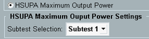
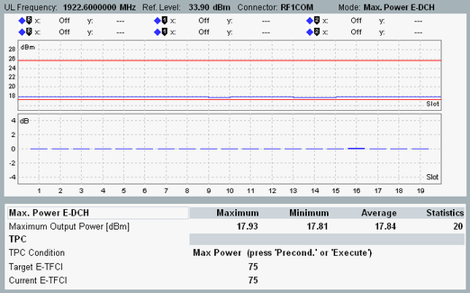

The following description assumes that you are familiar with basic tasks like accessing a firmware application or opening the main configuration dialog of an application. If necessary, refer to "Combined Signal Path Measurements" for an introduction.
Preset your R&S CMW to ensure a definite instrument state.
Open the "WCDMA Signaling" application.
In the configuration dialog ("Config" hotkey), configure the "RF Settings" as desired, especially the RF connectors, the external attenuations and the RF frequency.
Do not modify the "RF Power Uplink" settings.
Connect your UE to the configured RF connectors.
At the frontpanel press [WIZARD] to open the "CMW Wizard" dialog.
Select "HSUPA Maximum Output Power", "Subtest 1".

Press "Finish" to execute the wizard.
The dialog is closed and the wizard configures suitable settings for subtest 1.
To turn on the DL signal, press "ON | OFF". Wait until the [WCDMA-UE Signaling] softkey indicates the "ON" state and the hour glass symbol has disappeared.
Switch on the UE and wait until registration is complete.
Press the "Connect Test Mode" hotkey. (The hotkey for subtest 5 is "Connect HSPA TM"). Wait for the status connection established.
Switch to the "WCDMA TPC" measurement:
In the signaling application, press the [WCDMA TX Meas] softkey.
The measurement application is opened, the combined signal path scenario is selected and the trigger source is set correctly. The most important settings of the signaling application are taken over by the measurement application.
Select the "TPC Measurement" tab.
In the configuration dialog, configure the "Max. Power E-DCH" limits as desired.
Press "ON | OFF" to start the TPC measurement.
The "Max. Power E-DCH" TPC setup is executed automatically.
Note the TPC output state, the expected target E-TFCI and the monitored E-TFCI displayed below the diagrams.
When the R&S CMW finishes the measurement (measurement state "RDY"), evaluate the test results.
The upper diagram displays the measured maximum output power vs slot. The lower diagram displays the power steps between adjacent slots. The red lines indicate the configured maximum UE power limits.
The table provides a statistical evaluation for the UE power values in the upper diagram. The table highlights, if a result violates the configured limits.

After you have performed subtest 1, you can continue with subtest 2 to 5. For this purpose, repeat the following steps for each subtest.
Switch to the WCDMA signaling application:
In the TPC measurement, press the [WCDMA-UE Signaling] softkey two times.
Press the "Disconnect ..." hotkey to release the connection.
Open the "CMW Wizard" dialog. Select the desired subtest. Execute the wizard.
Perform step 10 to step 15 of the subtest 1 procedure.
That means:- Set up a connection
- Configure the limits
- Start the measurement
- Evaluate the results